Exercici_5
MKDOCS-GITHUB
Marc Brines Bañuls 2 ASIX IAW
Començarem actualitzant l’equip per a que baixe tots els paquets necesaris i no ens done falla, seguidament instal·lem el mkdocs a través del cmd.
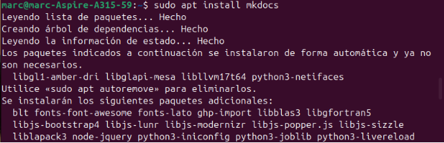
Fig 1: Instalació.
Lúltim pas està fet amb “sudo apt” perque a través del “pip” hem donava error i no hem permet baixar-ho.
Ara anem a crear un projecte amb mkdocs, aquest apart de fer un directori, també ens crearà un “.yaml” i un “.md”.
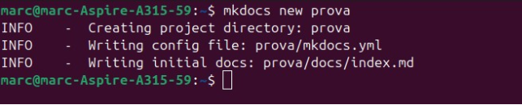
Fig 2: Creació directori i fitxers.
Fig 3: Comprovació.
Ara anem a editar el fitxer index, creant altre a banda, però enllaçat amb aquest ultim anomenat, per tal de fer proves.
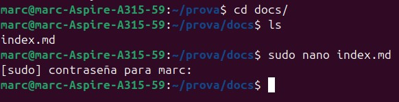
Fig 4: Editant “index.md”.
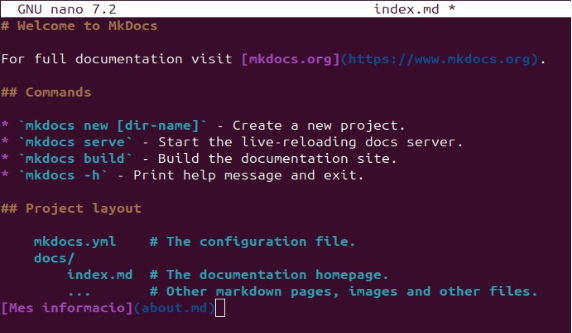
Fig 5: Fitxer “index.md”. Ara creem el fitxer on hem dirigit des de l’anterior.
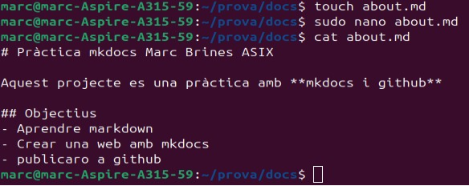
Fig 6: Creació del fitxer enllaçat.
Ara el que anem a fer es editar el yml, per tal de afegir les dues pàgines per a que apareguen les dues al menú de navegació.
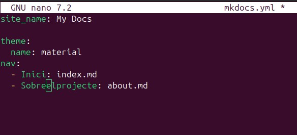
Fig 7: Editant el fitxer yml.
Ara amb el següent comandament anem a fer que, per el navegador, ens pugam conectar a la pàgina mkdocs que hem creat.
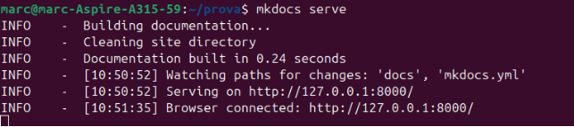
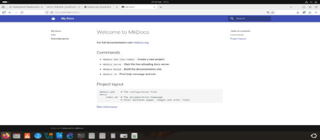
Fig 8 i 9: Connexió amb la pàgina web.
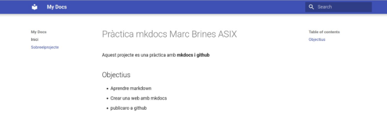
Fig 10: Segon repositori creat.
Ara anem a github per tal de crear la prova aon anem a pujar tot el treball fet, per tal de seguir amb la pràctica.
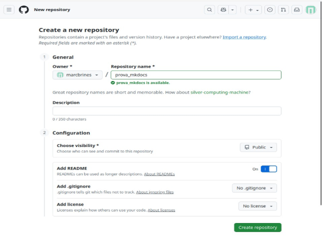
Fig 11: Creació del repositori a GitHub.
Inicialitzem el repositori git a la carpeta prova.
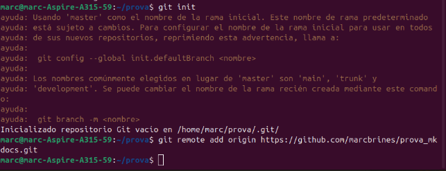
Fig 12: Inicialitzant repositori.
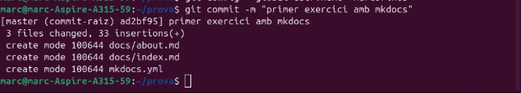
Fig 13: Commit.
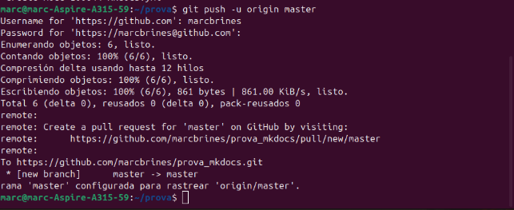
Fig 14: Pujem la rama master.
Executem el següent comandament per a que una vegada activem des de dins del repositori les “pages”, pugam entrar des del navegador.
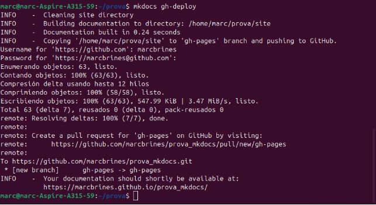
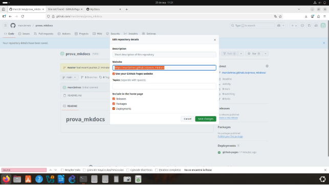
Fig 15 i 16: Activació del enllaç per al navegador.
Marc Brines Bañuls 7 ASIX IAW
7
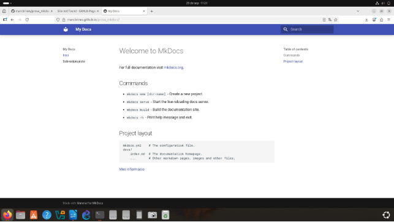
Fig 17: Comprobació final. Marc Brines Bañuls 2 ASIX IAW
8